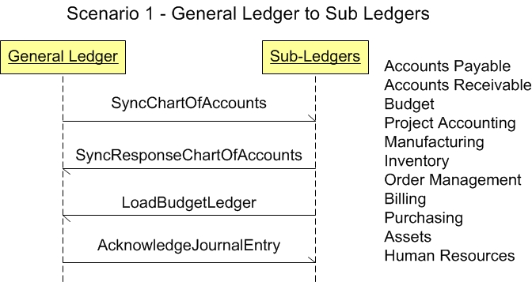

Scenario 1 - General Ledger to Sub Ledgers1.0 OverviewScenario #1 describes the integration for general ledger software integrating with a sub-ledger software or multiple sub-ledger applications.The purpose of this scenario is to enable the visualization of the participants and the dialogs between them for this type of integration. This is one model that may be used to design one's own integration based on the specific needs of an organization or group of organizations. Many applications create data that cause changes to account balances of a general ledger application. Some of those sub-applications have activity which will be reflected in a general ledger application. They can include:
1.1 ScenarioThe scenario shown below contains the participants involved in the interaction, the dialog flows or conversation between the them, certain assumptions about the sequence of events, and about the technical approach, such as publish and subscribe.This example is to be used as a design recommendation. .  1.2 AssumptionsThis scenario assumes a loosely coupled, asynchronous approach with transaction management required but not explicitly defined.The environment for this integration may be within a single enterprise, or across enterprises. It describes a model for one or more sub ledger applications integrating with a common general ledger application. The environment for this integration may be within a single enterprise, across several divisions or across partnerships. There may be instances where the amount of information sent to the general ledger is sufficient to accomplish a goal, and there may be times when the sub ledgers applications need to send the detailed transaction data to a cost accounting application. This scenario does not cover posting to a cost accounting component. Please refer to other Scenarios for posting. This scenario also assumes that the details of the financial transactions will be owned by or kept in the sub ledgers and because of that, the drill back mechanism from the general ledger application is also described in a later Scenarios. 1.3 Participant DefinitionsThis Scenario contains two major participants: the general ledger application and the sub-ledger application(s).The definitions and details of these applications are left to the designer but are assumed to contain the functionality as defined by what is commonly sold in the commercial market place today. This definition is broadly accepted by the scenario designers and is a direct result of the decision not to define how the processing takes place within any individual application. Each application must be able to perform the services defined by the message BOD (Business Object Document), but the internals of the application are not required or desired to be exposed at this level of standardized abstraction. The most important factors in defining these participants are to ensure that an integration designer can communicate the requirements and design precisely enough to define the interfaces needed and their interrelationships. 1.4 Business Workflow (Sequence)The business workflow is graphically represented by starting at the Scenario top and reading from top down and from left to right.For Scenario #1 the sequence includes:
1.5 Exception HandlingException handling is highly localized as the result of an implementation's infrastructure, management and business rules. As such, this section of the Scenario documentation is planned to be used as a guide to help understand the additional intent of these Scenarios. If no exceptions are noted here, then it can be assumed that the Scenario designers agreed that the Scenario is straight forward and has no additional needs:
Copyright OAGi 2017 - All Rights Reserved -- OAGIS release 10.4 - Document Number: 20170501 |